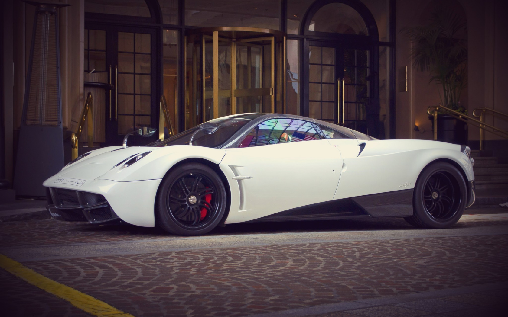
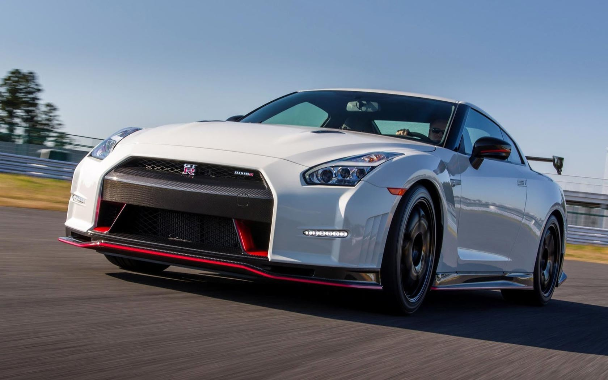

The Koenigsegg Agera is a mid-engined sports car produced by Swedish car manufacturer Koenigsegg.
It is a successor to the CCX/CCXR.
The name comes from the Swedish verb 'agera' which means "to act" or in imperative form "(You)act!".
It was named Hypercar of the Year in 2010 by Top Gear magazine.
The Agera RS variant is the world's fastest production car,
setting a record in 2017 with a GPS-verified two-way average top speed of 447 km/h (278 mph) and a fastest
straight-line speed of 458 km/h (285 mph).
The Agera ceased production in July 2018 with the unveiling of the two final edition cars at the 2018 Goodwood Festival of Speed. It was succeeded by the Jesko in 2019.
For rent a car click here
The Bugatti Chiron is a mid-engine two-seater sports car developed and manufactured in Molsheim,
France by French automobile manufacturer Bugatti Automobiles S.A.S. as the successor to the Bugatti Veyron.
The Chiron was first shown
at the Geneva Motor Show on 1 March 2016.
The car is based on the Bugatti Vision Gran Turismo concept car.The car is named after the Monegasque driver Louis Chiron.
The car shares the name with the 1999 Bugatti 18/3 Chiron concept
car.
For rent a car click here

The Pagani Huayra (Italian pronunciation: ['wai?ra]) is an Italian mid-engined sports car produced by Pagani.
Succeeding the company's previous offering, the Zonda, it had a base price of ?850,000 ($1.1M).
It is named after Huayra-tata,
a Quechua wind god.
The Huayra was named "The Hypercar of the Year 2012" by Top Gear magazine and received a very positive review when tested by Richard Hammond on Top Gear.
On February 11, 2015 it was reported that the Pagani
Huayra has been sold out.
The Huayra was limited to just 100 units as part of Pagani's agreement with engine supplier Mercedes-AMG.
The Pagani Huayra was officially debuted online with several pictures in a press release on January
25, 2011.
The official world debut was at the 2011 Geneva Motor Show held in March.
For rent a car click here
The Lamborghini Veneno is a limited production high performance sports car manufactured by Italian automobile manufacturer Lamborghini.
Based on the Lamborghini Aventador, the Veneno was developed to celebrate Lamborghini's 50th anniversary.
It was introduced at the 2013 Geneva Motor Show. When introduced, it had a price of US$4,500,000,
which makes it the one of the most expensive production cars in the world. The prototype, Car Zero,
is finished in Grigio Telesto
(medium grey) and includes an Italian flag vinyl on both sides of the car.
he engine is a development of the Aventador's 6.5-litre V12 and generates a power output of 750 PS (552 kW; 740 hp)
at 8,400 rpm and 690 N?m (509 lb?ft)
of torque at 5,500 rpm. The increase in power was achieved by
enlarging the air intakes and modifying the exhaust system.
For rent a car click here
The Ford GT is an American mid-engine two-seater sports car manufactured and marketed by Ford for model year 2005 in conjunction with the company's 2003 centenary.
The Ford GT began production again from the 2017 model year.
The
GT recalls Ford's historically significant GT40, a consecutive four-time winner of the 24 Hours of Le Mans (1966-1969), including a 1-2-3 finish in 1966.
he Ford GT began life as a concept car designed in anticipation of the automaker's
centennial year and as part of its drive to showcase and revive its "heritage" names such as Mustang and Thunderbird.
At the 2002 North American International Auto Show [3], Ford unveiled a new GT40 Concept car.
Camilo Pardo, the
then head of Ford's "Living Legends" studio, is credited as the chief designer of the GT and worked under the guidance of J Mays.
Carroll Shelby, the original designer of the Shelby GT 500,
was brought in by Ford to help develop
the GT; which included performance testing of the prototype car. While under development, the project was called Petunia.
For rent a car click here

Between 1969 and 1974, and again between 1989 and 2002, Nissan produced a high performance version of its Skyline coupe called the Nissan Skyline GT-R.
This car proved to be iconic for Nissan and achieved much fame and success on both
road and track.
The GT-R is an entirely new model, sharing little with the Skyline GT-R save its signature four round tail lights.
Like some later generations of the Skyline GT-R, the GT-R has all-wheel drive with a twin-turbo
6-cylinder engine.
But the four-wheel-steering HICAS system has been removed and the former straight-6 RB26DETT engine has been replaced with a new V6 VR38DETT.
Because of the GT-R's heritage, the chassis code for the all-new version
has been called CBA-R35,
or 'R35' for short (where CBA is the prefix for emission standard), carrying on the naming trend from previous Skyline GT-R generations.
The GT-R has also retained its Skyline predecessor's nickname, Godzilla,
given to it by the Australian motoring publication Wheels in its July 1989 edition.
For rent a car click here